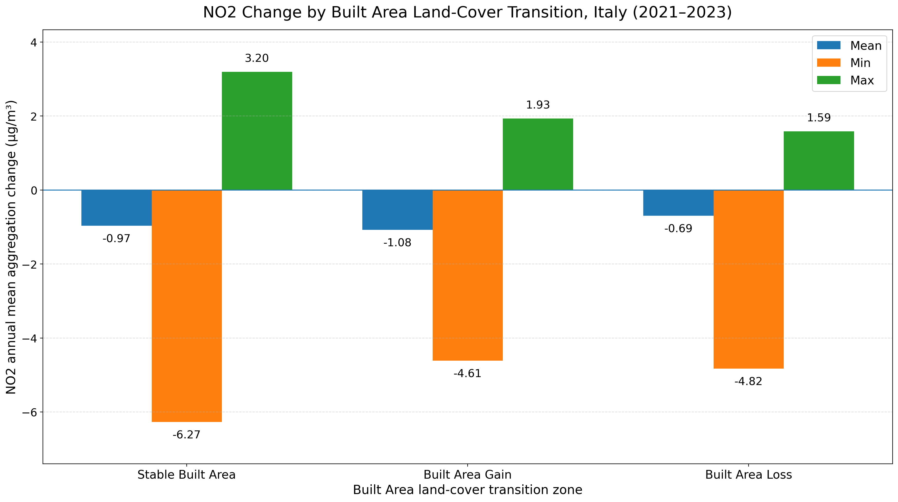
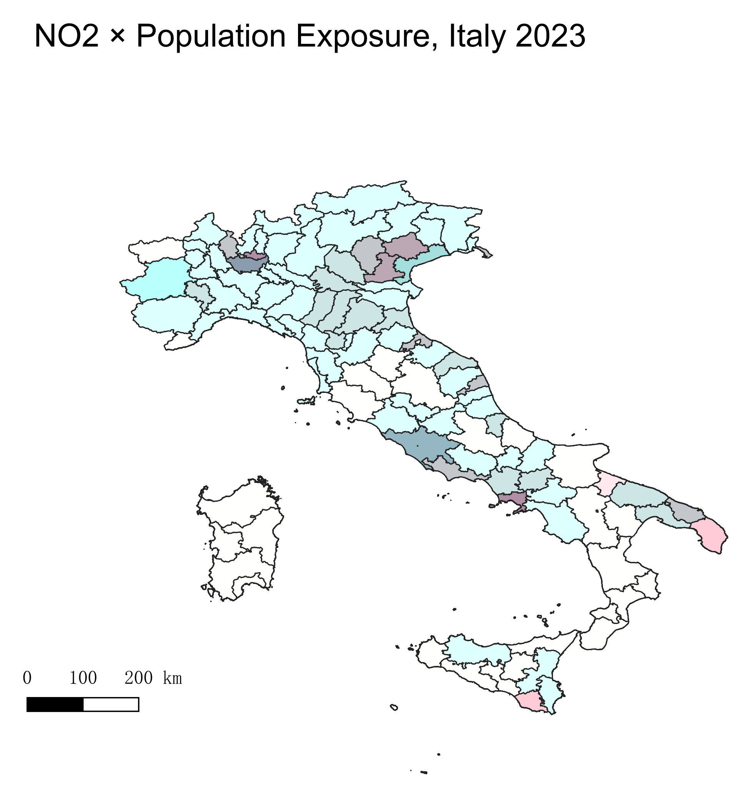
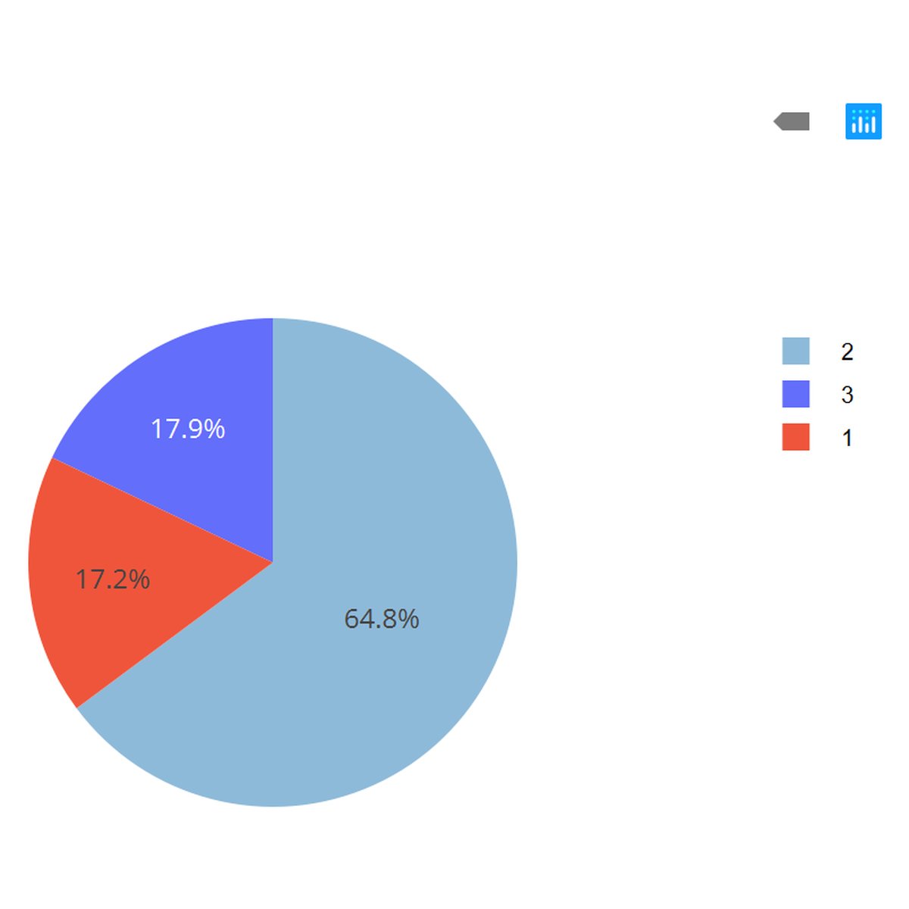
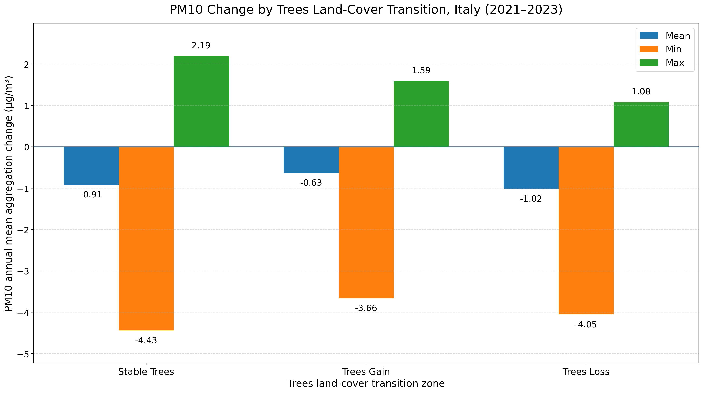
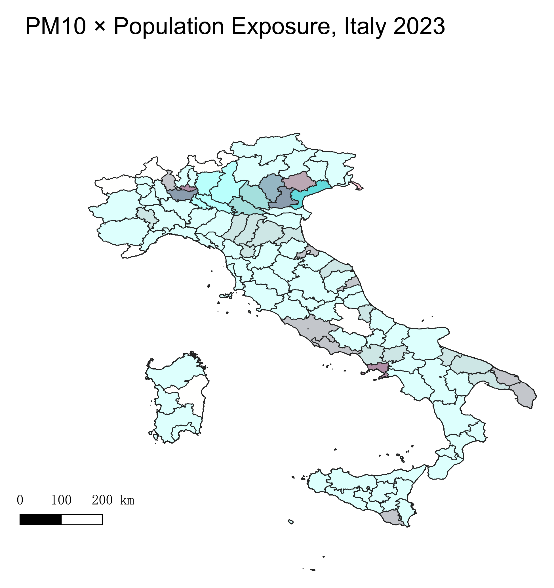
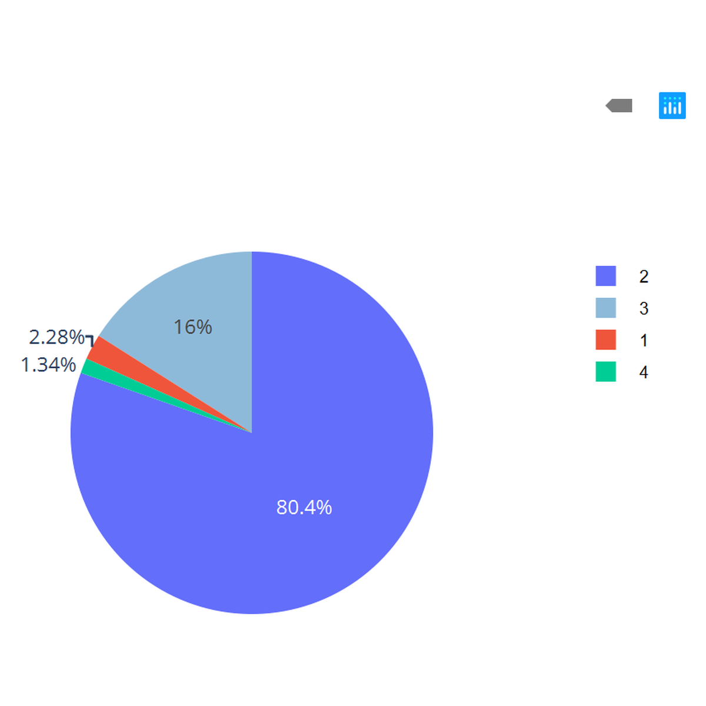
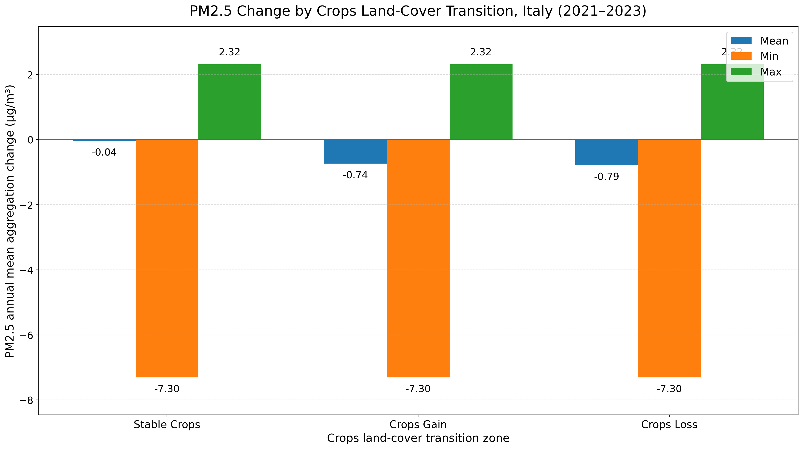
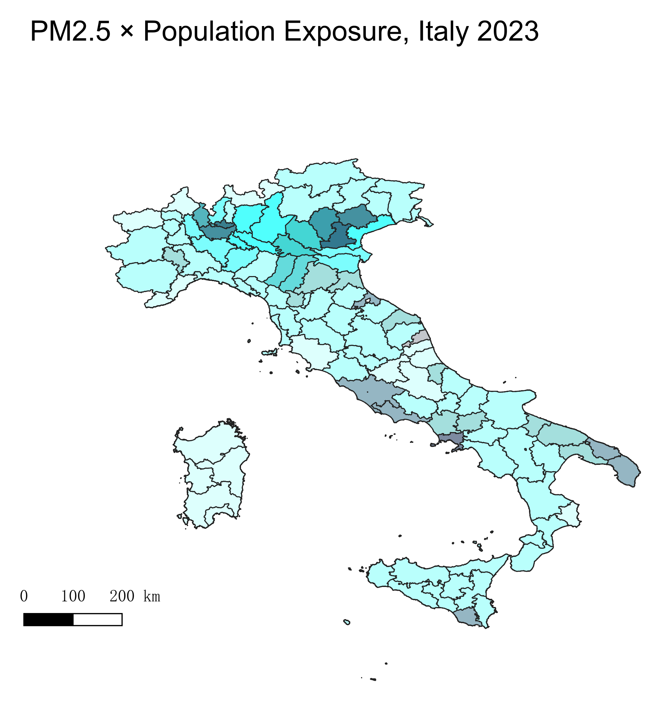
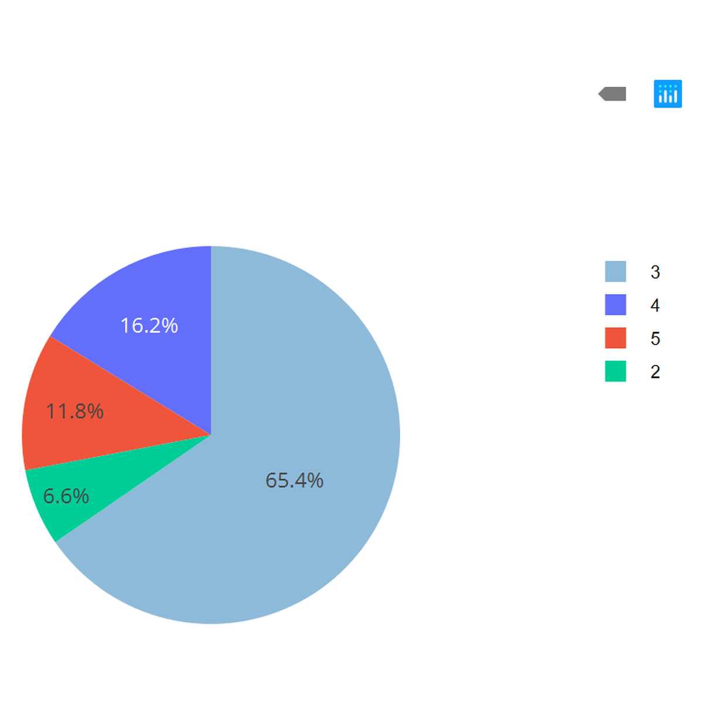

Results
This page presents the main outputs of the GIS laboratory, including land-cover transition statistics, pollutant concentration changes, bivariate exposure maps, and population exposure charts.
The results are organized by the assigned pollutant and land-cover class: NO2 with Built Area, PM10 with Trees, and PM2.5 with Crops.
NO2 and Built Area Land-Cover Transition
This section analyzes the relationship between NO2 annual mean aggregation change and built area land-cover transitions in Italy between 2021 and 2023.
Land-Cover Transition Statistics: Built Area
The table below summarizes the pixel-based land-cover transition statistics for Built Area. Transitions involving Clouds were excluded from the analysis.
| Indicator | Pixel percentage (%) | Category |
|---|---|---|
| Stability / Persistence | 94.62 | Built Area remained Built Area |
| Primary Source of Gain | 55.54 | Crops → Built Area |
| Secondary Source of Gain | 25.08 | Rangeland → Built Area |
| Third Source of Gain | 15.42 | Trees → Built Area |
| Primary Destination of Loss | 48.26 | Built Area → Crops |
| Secondary Destination of Loss | 24.46 | Built Area → Trees |
| Third Destination of Loss | 24.07 | Built Area → Rangeland |
Percentages are pixel-based. Stability is calculated relative to stable and loss pixels, while gain and loss percentages are calculated relative to total valid gain and total valid loss respectively.
NO2 Change by Built Area Transition Zones

Population Exposure to NO2



Interpretation
Built area shows high persistence between 2021 and 2023, with 94.62% of built-up pixels remaining stable. Most newly urbanized areas originated from Crops, followed by Rangeland and Trees. The NO2 zonal statistics indicate negative mean changes for stable, gain, and loss built area zones, suggesting an overall decrease in NO2 concentration during the study period. However, positive maximum values show that localized NO2 increases still occurred in some areas.
PM10 and Trees Land-Cover Transition
This section analyzes the relationship between PM10 annual mean aggregation change and tree land-cover transitions in Italy between 2021 and 2023. Tree-related pixels were classified into stable trees, trees gain, and trees loss.
Land-Cover Transition Statistics: Trees
The table below summarizes the pixel-based land-cover transition statistics for Trees. Transitions involving Clouds were excluded from the analysis.
| Indicator | Pixel percentage (%) | Category |
|---|---|---|
| Stability / Persistence | 93.58 | Trees remained Trees |
| Primary Source of Gain | 70.43 | Rangeland → Trees |
| Secondary Source of Gain | 22.02 | Crops → Trees |
| Third Source of Gain | 6.18 | Built Area → Trees |
| Primary Destination of Loss | 82.08 | Trees → Rangeland |
| Secondary Destination of Loss | 9.39 | Trees → Crops |
| Third Destination of Loss | 7.96 | Trees → Built Area |
Percentages are pixel-based. Stability is calculated relative to stable and loss pixels, while gain and loss percentages are calculated relative to total valid gain and total valid loss respectively.
PM10 Change by Tree Transition Zones

Population Exposure to PM10


Interpretation
For PM10, all tree-related transition zones show a negative mean annual aggregation change between 2021 and 2023. This indicates an overall decrease in PM10 concentration within stable tree areas, tree gain areas, and tree loss areas. The strongest average decrease is observed in tree loss zones, while tree gain zones show a smaller decrease. However, the maximum values are positive in all three zones, suggesting that localized PM10 increases still occur. Therefore, the relationship between tree-cover transition and PM10 change should be interpreted as a spatial association rather than a direct causal effect.
PM2.5 and Crops Land-Cover Transition
This section analyzes the relationship between PM2.5 annual mean aggregation change and crop land-cover transitions in Italy between 2021 and 2023.
Land-Cover Transition Statistics: Crops
The table below summarizes the pixel-based land-cover transition statistics for Crops. Transitions involving Clouds were excluded from the analysis.
| Indicator | Pixel percentage (%) | Category |
|---|---|---|
| Stability / Persistence | 93.20 | Crops remained Crops |
| Primary Source of Gain | 60.70 | Rangeland → Crops |
| Secondary Source of Gain | 22.50 | Built Area → Crops |
| Third Source of Gain | 15.10 | Trees → Crops |
| Primary Destination of Loss | 50.40 | Crops → Rangeland |
| Secondary Destination of Loss | 26.00 | Crops → Built Area |
| Third Destination of Loss | 22.80 | Crops → Trees |
Percentages are pixel-based. Stability is calculated relative to stable and loss pixels, while gain and loss percentages are calculated relative to total valid gain and total valid loss respectively.
PM2.5 Change by Crop Transition Zones

Population Exposure to PM2.5


Interpretation
For PM2.5, all crop-related transition zones show negative mean annual mean aggregation change between 2021 and 2023. The smallest average decrease is observed in stable crop areas, while crop gain and crop loss areas show stronger decreases. The positive maximum value indicates that some local areas still experienced an increase in PM2.5 concentration. Therefore, the relationship between crop transition and PM2.5 change should be interpreted as a spatial pattern rather than a direct causal relationship.
Comparison of Pollutant Change Patterns
The table below summarizes the mean annual aggregation change for each pollutant and its assigned land-cover transition class.
| Pollutant | Land-cover class | Stable mean change (µg/m³) | Gain mean change (µg/m³) | Loss mean change (µg/m³) | Main pattern |
|---|---|---|---|---|---|
| NO2 | Built Area | -0.97 | -1.08 | -0.69 | Overall decrease across built area transition zones, with localized increases. |
| PM10 | Trees | -0.91 | -0.63 | -1.02 | Overall decrease across tree transition zones, strongest in tree loss areas. |
| PM2.5 | Crops | -0.04 | -0.74 | -0.79 | Stable crop areas show smaller decrease than crop gain and crop loss zones. |
Across the three pollutants, the mean annual aggregation change is negative for all stable, gain, and loss transition zones. This suggests a general decrease in pollutant concentration between 2021 and 2023 within the analyzed land-cover transition classes. However, the presence of positive maximum values in the zonal statistics indicates that local increases still occurred in specific areas. The results should therefore be interpreted as spatial associations between land-cover transitions and air quality change, rather than direct causal relationships.